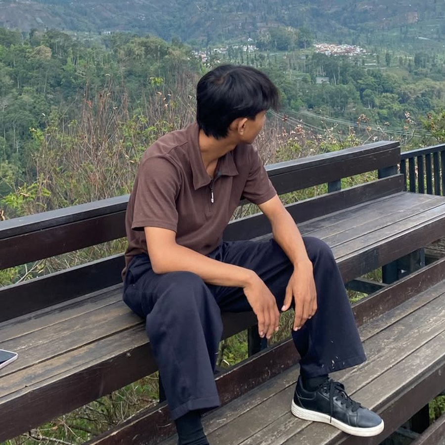

Informatics Engineering Student | Aspiring Web Developer
Building Digital Experiences for the Future.
Saya adalah mahasiswa Teknik Informatika yang memiliki ketertarikan pada pengembangan web, teknologi, pemrograman, dan kecerdasan buatan. Saya terus belajar, bereksperimen, dan membangun solusi digital yang bermanfaat.
Muhammad Syarofi Kunaedi

AI
About Me
Saya merupakan mahasiswa S1 Teknik Informatika yang berlokasi di Cirebon, Indonesia. Saya memiliki ketertarikan pada dunia teknologi, khususnya pengembangan aplikasi berbasis web, pemrograman, dan perkembangan Artificial Intelligence.
- Education
- S1 Teknik Informatika
- Location
- Cirebon, Indonesia
- Interest
- Web Development, Artificial Intelligence, Programming
- Current Focus
- Building and Learning Digital Projects
Skills & Technologies
Teknologi yang sedang saya pelajari dan gunakan. Saya belum mengklaim keahlian tingkat lanjut pada satu pun.
CSS3
Sedang dipelajariPython
Sedang dipelajariJavaScript
Sedang dipelajariWeb Development
Fokus utamaArtificial Intelligence
MinatMy Projects
Education
-
S1 Teknik Informatika
Fokus pembelajaran: Programming, Software Development, dan Information Technology.
Contact Me
Terbuka untuk diskusi, belajar bersama, dan kolaborasi proyek web.
Let's Connect